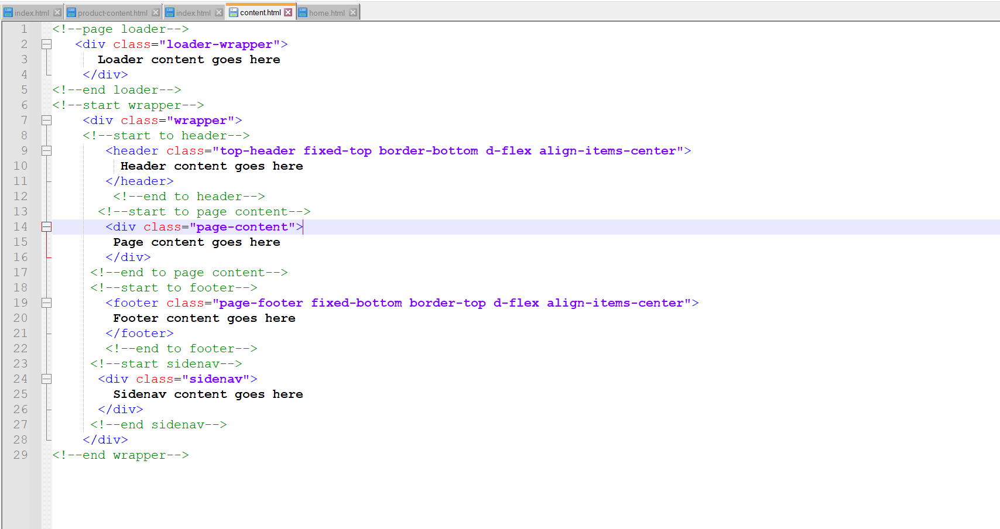

Synrok is a mobile based eCommerce html template. It is developed with latest version of bootstrap 5 framework. It has multiple UI components. It perfectely works in all browsers with fast speed. Code quality is awesome and well written. Every developer who has basic knowledge of html, can be works with this template. It is related to fashion eCommerce industry. It is totally w3 validated and 0 console errors. All authentication pages are available in the product. By using this template html based mobile application can be developed. This template available in dark and light mode.
Thank you for purchasing my theme. If you have any questions that are beyond the scope of this help file, please feel free to email via my user page contact form here. Thanks so much!
This template is fully responsive and created with bootstrap5 framework. All the content is within wrapper. The wrapper is containing sidebar wrapper ,topbar header and content wrapper. In content wrapper all part is devided with row and cards. In this template most of the classes are used acording to bootstrap. Here is the general structure.

If you would like to edit the color, font, or style of any elements in one of these columns, you would do the following:
body a {color: #someColor;}
If you find that your new style is not overriding, it is most likely because of a specificity problem. Scroll down in your CSS file and make sure that there isn't a similar style that has more weight.
I.E.
.wrapper .page-wrapper a {color: #someColor;}
So, to ensure that your new styles are applied, make sure that they carry enough "weight" and that there isn't a style lower in the CSS file that is being applied after yours.
We are using one CSS file for the template. In the general section of css file I used the codes to reset the generic style of the html. All required styles are included in this file with well commented. According to the comment you can customize the template easily. Here is the basic style sheet structure.
/* === Top Header === */
/* === Searchbar === */
/* === eCommerce Section === */
If you would like to edit a specific section of the site, simply find the appropriate label in the CSS file, and then scroll down until you find the appropriate style that needs to be edited.
Any images that are placed within the blog section have 5px worth of padding and a light bluish background. If you would like to edit the display of these images, find the following section in the style sheet:
#primaryContent #blog img {
change styles here:
}
This theme imports four Javascript files.
[some Javascript goes here...along with an general explanation]
$(".mobile-search-button).on("click", function() {
PSD Files are not included.
I've used the following images, icons or other files as listed.
Once again, thank you so much for purchasing this theme. As I said at the beginning, I'd be glad to help you if you have any questions relating to this theme. No guarantees, but I'll do my best to assist. If you have a more general question relating to the themes on themeforest, you might consider visiting the forums and asking your question in the "Item Discussion" section.
Coder Vent